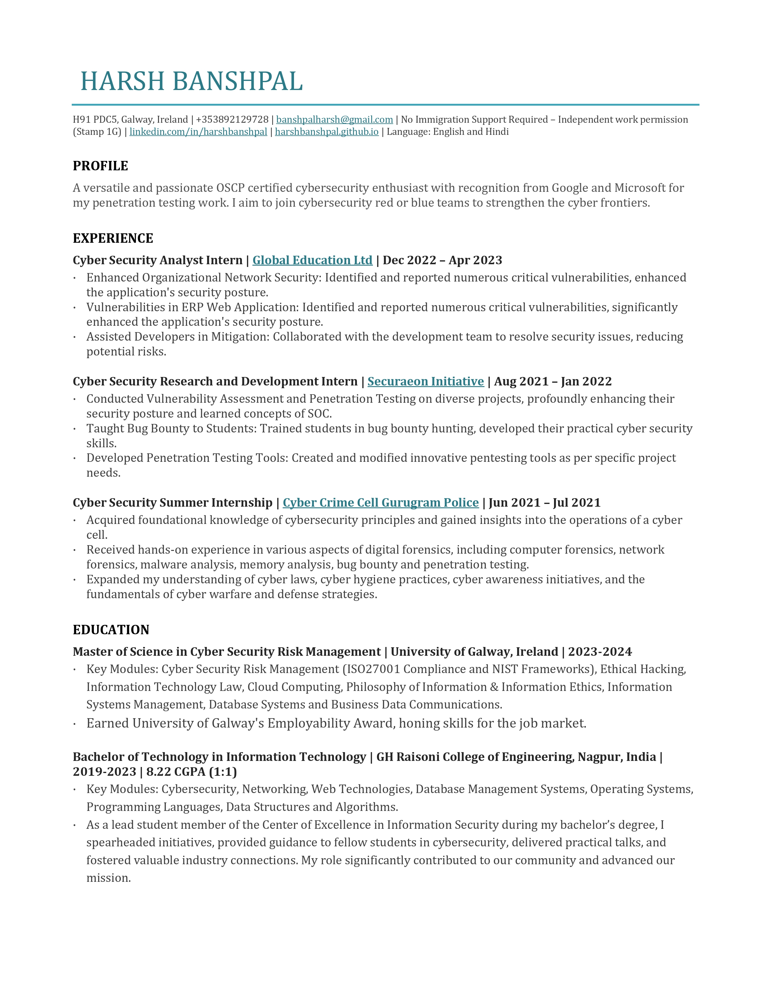

Journey
I was born into a middle-class Indian family in the beautiful town of Kirnapur.
Like many Indian children, I had no clear direction in life, only a passion for playing cricket.
Eventually, I got a PC with 2GB RAM, which was sufficient for playing GTA San Andreas. This led me to dabble in creating basic HTML pages.
After finishing school, I had hoped college would teach me to develop Android apps and web applications, but instead, I found myself studying subjects that seemed irrelevant.
Apparently, my curiosity in hacking was excited when my college’s website was hacked by a Bangladeshi hacker, who defaced the webpage and left his Facebook profile link.
I reached out to him to learn how he did it, but he ignored my messages. This drove me to Google and eventually to purchase an Udemy course on Ethical Hacking.
While I was learning for the sake of knowledge, I also began to explore Android app development as a potential career, unaware that ethical hacking could offer similar opportunities.
During my first year of engineering, I felt overwhelmed and considered dropping out, but the onset of Covid-19 allowed me to pass.
At that point, I stopped learning altogether and felt lost, unsure of what to do next. However, I knew I was passionate about ethical hacking,
and my mentor encouraged me to delve into the bug bounties. Gradually, I leveled up, earning recognition from renowned companies like Google and Microsoft.
By my third year, I had received several job offers and decided to opt-out college placement. One day, an idea struck me to explore
cybersecurity in different parts of the world, which led me to discover the beautiful country of Ireland. I chose to study in Galway, but financial
constraints were an obstacle. After extensive research and a lengthy process, I secured an education loan and was admitted to the University of Galway,
which give me a vibe of the Harry Potter campus.
Currently, I’m in my final month at the university and am seeking a full-time role in cybersecurity.
Alongside my job search, I’m actively working towards making BSides Galway a reality this year, aiming to contribute to the vibrant cybersecurity community in Ireland.
Work Experience
Although my professional journey in cybersecurity began with finding vulnerabilities and reporting them to the respective companies, my industry experience started with a summer internship at the Cyber Crime Cell of Gurugram Police.
It was like stepping into a real-life crime thriller, where I immersed myself in digital forensics, unraveling the mysteries of cyber law and the intricacies of cyber defense.
Following that, I joined Securaeon Initiative as a Cyber Security Research and Development Intern. This role was a blend of education and action, where I conducted vulnerability
assessments and penetration testing, significantly bolstering the security of numerous projects. I also had the privilege of mentoring students in the art of bug bounty hunting,
equipping them with practical cybersecurity skills.
My tenure at Global Education Ltd began with a pivotal discovery. While exploring the college’s ERP application, I uncovered an IDOR vulnerability that could potentially disclose sensitive
information, including student personal and bank details. This third-party application, crucial for the college’s operations, was at risk. I promptly reported this vulnerability
to Global Education in an ethical manner, showcasing my commitment to cybersecurity. Recognizing my skills and the importance of my find, they offered me an internship.
As a Cyber Security Analyst. My role was critical in enhancing the organization’s application and network security by identifying and mitigating further critical vulnerabilities.
As the go-to expert, I worked closely with the development team to strengthen the application’s defenses against potential cyber threats.
Resume
Welcome to my professional space!
As I stand on the edge of completing my Master’s degree in Cyber Security Risk Management from the University of Galway,
I invite you to explore my experiences and accomplishments in the field.
Below, you’ll find my resume which details my journey, skills,
and the recognitions I’ve received from industry leaders.
Download My Resume


Contact
I love making new professional acquaintances. Reach out if you want to talk technology, cybersecurity, or any interesting stuff. Feel free to connect with me through my social media handles!
Elements